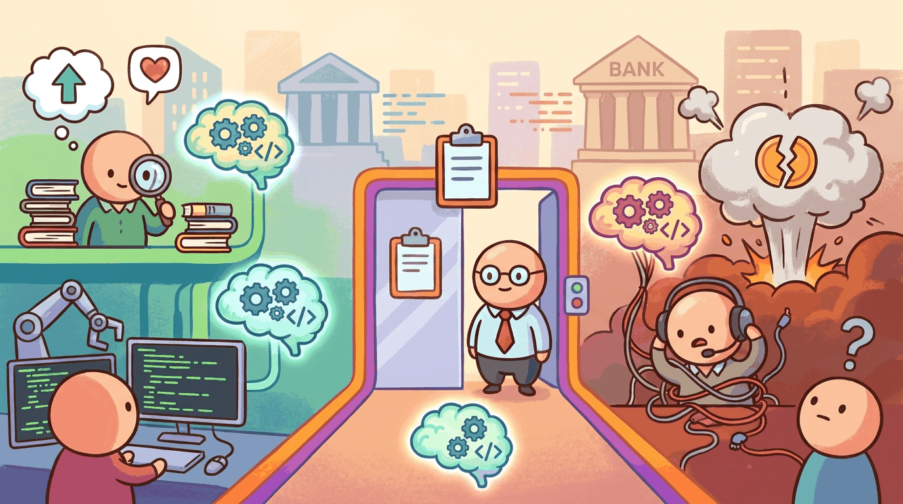

capturing the theme: Research synthesis, sentiment, code generation, compliance, customer operations. What's...Finance was an early adopter of LLMs because the workflows are text-on-text (analyst reports, regulatory filings, news, internal memos), the per-employee cost is high enough to justify automation investment, and the back-office processes are well-defined. But finance is also one of the most regulated industries in the world, and the failure modes (model risk, market manipulation, fair-lending violations, fiduciary breach) have legal teeth.
The 2023 deployment anchors that defined the industry's playbook: Bloomberg's BloombergGPT (Mar 2023, 50B parameters) as the first domain-specialized pretraining bet; Morgan Stanley's GPT-4 deployment for wealth advisors (Mar 2023) as the first major Wall Street rollout; JPMorgan's IndexGPT trademark filing (May 2023) as a public signal of in-house build intent; and Goldman Sachs' Mar 2023 "300M jobs" macro report as the macro framing that pushed boards to act.
This chapter is the practitioner snapshot of what 2026 settled. Section 52.1 covers the use cases that ship. Section 52.2 covers the failure modes. Section 52.3 covers the regulatory framework. Section 52.4 covers the tiered LLM trust architecture. Section 52.5 closes with the vendor landscape, and Section 52.6 is the longer production-pattern companion.
Sections in This Chapter
What Comes Next
Finance produced the tiered-trust framework that generalizes well across regulated industries. Chapter 53 turns to healthcare, where the regulatory friction is at least as intense (FDA SaMD, HIPAA, malpractice exposure) and the highest-leverage use case (ambient clinical documentation) is unlike anything in finance.